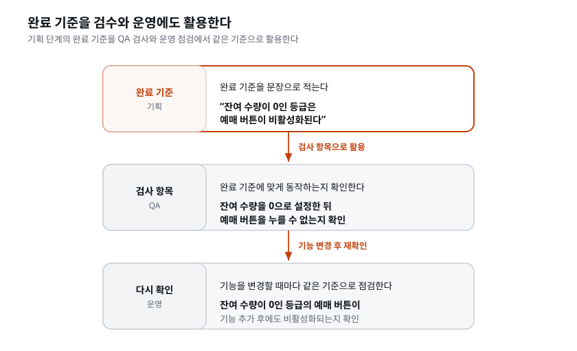

이 장을 마치면 정리되지 않은 회의록에서 요구사항을 추려 PRD(제품 요구사항 문서)를 만들 수 있다. 우리 AI 개발팀의 첫 역할인 PM 스킬도 프로젝트에 추가한다. 온티켓 첫 버전에 무엇을 넣고 무엇을 뺄지 직접 결정하고, 제외할 기능과 그 이유를
docs/PRD.md의 '범위 제외'에 기록한다.
온티켓 킥오프 회의가 끝났다. 오대표는 "예쁘고 신뢰감 있게", "3분 안에 결제", "나중엔 플랫폼으로" 같은 의견을 냈고, 회의록에는 그 말들이 뒤섞여 적혀 있다. 이 상태로 "티켓 서비스 만들어줘"라고 AI에게 지시하면 어떻게 될까.
서비스는 만들어진다. 그런데 무엇이 만들어질지는 아무도 모른다. 회의록에는 서로 충돌하는 요구(모든 기능을 넣고 싶지만 3일 안에 출시해야 함), 정해지지 않은 것(환불 정책), 측정할 수 없는 말 (예쁘게, 편리하게)이 섞여 있기 때문이다. AI는 빈칸을 만나면 자기 마음대로 채운다. 결과물이 내가 원한 것과 다르면 "AI가 이상하게 만들었다"고 생각하기 쉽다. 하지만 원인은 사람이 필요한 결정을 하지 않은 데 있을 수 있다.
이 대목을 조금 더 풀어 보자. 개발자에게 "티켓 서비스 만들어줘"라고 요청하면, 유능한 사람은 곧바로 만들지 않고 되묻는다. "환불은 되나요?", "결제 실패하면 어떻게 하죠?", "매진된 공연은 목록에서 감추나요, 아니면 매진 표시만 하나요?" 이런 질문으로 아직 정해지지 않은 사항을 확인하는 것이다. 그런데 AI는 대체로 되묻기보다 그럴듯한 내용으로 채워서 진행하는 경우가 많다. 속도는 빠르지만, AI가 추정한 내용이 내 의도와 다르면 화면과 코드에도 그 차이가 그대로 반영된다. 그래서 "빈칸을 남기지 않는 것", 즉 결정을 미리 내려 두는 것이 AI 개발에서 특히 중요하다.
여기서 한 가지는 분명히 해 두자. "AI가 알아서 다 해 준다며, 결정까지 시키면 안 되나?"라는 생각이 들 수 있다. AI에게 의견을 물어보는 것은 좋다. "환불 정책, 업계에서 흔한 방식 세 가지를 장단점과 함께 제시해줘"는 훌륭한 지시다. 하지만 최종 결정은 사람의 몫으로 남겨야 한다. AI가 제시한 세 안 중 무엇을 고를지는 우리 사정(공연 취소가 잦은지, 환불 문의 응대 여력이 있는지)을 아는 사람이 정한다. AI는 선택지를 넓혀 주고, 사람은 그중에서 고른다. 이 장에서는 이렇게 역할을 나누어 작업한다.
그래서 개발을 시작하기 전에 결정한 내용을 문서로 정리한다. 그 문서가 PRD다. 이 장에서는 다음 순서로 PRD를 완성한다. 회의록 → PRD 초안 → 검토 → 무엇을 뺄지 결정 → 확정된 PRD.
[짚고 가기] "필요한 결정을 했는가"라는 관점이 이 장의 핵심이다. AI 결과가 마음에 안 들면 반사적으로 "AI가 못한다"고 결론짓기 쉬운데, 지시에서 구체적으로 정하지 않은 내용이 많지는 않았는지 확인해 보자. 직접 확인해 보고 싶다면, 일부러 애매한 지시("괜찮은 티켓 사이트 하나 만들어줘")를 주고 결과를 살펴보자. 우리가 정하지 않은 부분을 AI가 어떻게 채웠는지 확인할 수 있다. 이 장의 나머지는 그 빈칸을 없애는 훈련으로 이어진다.
회사에서 기획 문서는 종종 결재받고 잊히는 서류가 된다. AI 개발에서는 다르다. PRD는 AI 개발팀 전체가 작업할 때 참고하는 기준 문서다. 디자이너 역할은 PRD를 보고 화면을 그리고, 개발자 역할은 PRD의 기능 목록대로 만들고, QA 역할은 PRD의 완료 기준으로 검사한다.
요구사항이 모호하면 화면 설계와 구현, 검증 기준도 모호해진다. 반대로 PRD를 정확히 작성하면 이후 지시는 짧아진다. 같은 내용을 반복해서 설명하는 대신 "PRD대로 만들어"라고 요청할 수 있기 때문이다.
어떤 차이가 있는지 조금 더 살펴보자. 전통적인 회사에서 기획서의 독자는 대개 결재자다. 상사가 읽고 "진행해"라고 승인하면 기획서의 역할이 끝났다고 생각하기 쉽다. 그다음 실제로 만드는 담당자는 기획서에 빠진 내용을 회의·메신저·구두로 확인한다. 이렇게 그때그때 물어보며 작업을 진행할 수 있었다.
AI에게 개발을 맡길 때는 이렇게 빠진 내용을 확인하기가 쉽지 않다. AI 개발팀(디자이너·개발자·QA 역할)이 참조하는 것은 결국 우리가 준 문서다. 문서에 안 적힌 것은 AI가 짐작으로 채우고, 짐작이 틀리면 결과가 어긋난다. 즉 PRD를 작성할 때는 결재를 맡은 상사뿐 아니라 다음 작업을 맡을 담당자(사람이든 AI든)도 고려해야 한다. 이것이 "AI 시대에 기획 문서가 더 중요해진" 첫 번째 이유다.
두 번째 이유는 개발 속도다. 예전에는 기획서에 모호한 부분이 있어도 개발하는 데 시간이 걸렸으므로, 중간에 문제를 발견하고 수정할 여지가 있었다. 지금은 AI가 몇 분 만에 화면 수십 개를 만들어 낸다. 빠르다는 것은 잘못된 방향으로도 빠르게 진행할 수 있다는 뜻이다. 잘못된 입력으로 시작하면, 잘못된 결과가 그만큼 빨리·많이 쌓인다. 그래서 처음부터 요구사항을 정확히 정리하는 일이 더 중요해졌다. 기획에 30분 더 쓰는 것이, 잘못 만든 화면 스무 개를 다시 수정하는 것보다 비용이 적게 든다.
세 번째 이유는 재사용이다. 좋은 PRD 하나는 이 프로젝트가 끝날 때까지 계속 참조된다. 화면을 디자인하거나 코드를 작성하고 검수할 때뿐 아니라, 나중에 "이거 왜 이렇게 만들었지?"를 확인할 때도 참고한다. 문서를 한 번 잘 작성해 두면 그 뒤 수십 번의 지시가 짧아진다는 것은 과장이 아니다. 앞으로 만들 스킬들이 이 PRD를 근거로 작업하게 된다.
[짚고 가기] "PRD의 독자는 결재자가 아니라 다음 작업을 맡을 담당자"라는 관점은 처음엔 낯설다. 요리법에 비유하면 이해하기 쉽다. 요리법은 심사위원에게 보여주려고 쓰는 글이 아니라, 그 요리법을 보고 실제로 요리할 사람(또는 로봇)을 위한 지시서다. 재료 분량이 "적당히"라고 적혀 있으면 만드는 사람마다 다른 요리가 나온다. PRD도 마찬가지다. 이것이 뒤에서 설명할 모호한 표현을 측정 가능한 기준으로 바꾸는 원리와도 이어진다.
이 절의 용어들은 이 장뿐 아니라 앞으로 계속 쓰인다. 개발이 처음이라면 낯설 수 있는데, 완벽히 외울 필요는 없다. "이런 개념이 있구나" 정도로 눈에 익혀 두면 실습하면서 자연스럽게 익숙해진다.
만들 결과물이 갖추어야 할 기능과 조건이다. 두 종류로 구분해 두면 설명하고 확인하기 쉽다.
용어 자체를 조금 풀어 보자. '요구사항(requirement)'은 말 그대로 "요구되는(required) 것", 즉 만들어진 결과물이 반드시 만족해야 할 조건이다. 단순히 원하는 것을 나열한 목록(wish list)과는 다르다. "있으면 좋겠다"는 희망과 달리 요구사항은 결과물이 충족해야 하는 조건이다. 그래서 좋은 요구사항은 나중에 충족했는지 확인할 수 있는 문장으로 쓴다.
기능 요구와 비기능 요구의 구분이 왜 유용할까. 둘은 확인하는 방법이 다르기 때문이다.
| 구분 | 답하는 질문 | 온티켓 예 | 어떻게 확인하나 |
|---|---|---|---|
| 기능 요구 | 무엇을 할 수 있나 | 티켓 등급을 골라 예매한다 | 기능이 동작하는지 확인 |
| 비기능 요구 | 어떤 품질인가 | 폰에서 3분 안에 결제가 끝난다 | 소요 시간 등 품질 수준을 측정 |
기능 요구는 예매 버튼이 동작하는지처럼 기능의 수행 여부를 확인한다. 비기능 요구는 얼마나 빠르고 안정적으로 동작하는지 확인한다. 응답에 3초가 걸리는지 10초가 걸리는지, 100명이 동시에 접속해도 처리할 수 있는지 등을 측정한다. 비기능 요구는 자주 잊히는데(눈에 잘 안 보이니까), 서비스의 성패는 오히려 여기서 갈리는 경우가 많다. "예매는 되는데 너무 느려서 고객이 떠난다"가 비기능 요구를 충족하지 못한 대표적인 사례다. 온티켓에서 오대표가 말한 "폰으로 3분 안에"가 바로 비기능 요구이고, "골목 라이브 때처럼 초과 판매되면 안 된다"도 안정성이라는 비기능 요구에 가깝다.
무엇을, 누구를 위해, 왜 만드는지와 완성의 기준을 정리한 문서다. 정해진 국제 표준 양식은 없지만, 실무에서는 대체로 다음 항목을 포함한다.
| 항목 | 답하는 질문 |
|---|---|
| 배경·목표 | 왜 만드는가, 무엇이 성공인가 |
| 사용자 | 누가 쓰는가 (구매자? 운영자?) |
| 기능 요구 | 무엇을 할 수 있어야 하는가 (목록) |
| 완료 기준 | 각 기능이 완성됐다고 판단하는 조건 |
| 범위 제외 | 이번에 만들지 않는 기능 (작업 범위를 명확히 함) |
| 미결사항 | 아직 결정하지 않은 사항 (확인하고 결정할 수 있도록 기록) |
이름을 세 단어로 나누어 보면 문서의 성격을 이해하기 쉽다. Product(제품) — 만들 대상, Requirements(요구사항) — 그 대상이 만족해야 할 조건, Document(문서) — 말이 아니라 글로 남긴 것. 세 단어 중 실무에서 가장 자주 잊히는 것이 마지막 'Document'다. 회의에서 다 말했으니 됐다고 넘어가면, 그 결정은 며칠 안에 사람들의 기억 속에서 조금씩 달라진다. 오대표는 "7일 전 전액 환불"이라 기억하고, 개발자는 "7일 전 50%"로 기억하는 식이다. 글로 남기면 같은 내용을 기준으로 확인할 수 있다. 이것이 결정 사항을 문서로 만드는 이유다.
각 항목이 왜 필요한지 하나씩 짚어 두면, 나중에 PRD를 직접 검토할 때 무엇을 봐야 할지 감이 온다.
'범위 제외'가 중요한 이유. 사람은 "만들 것"은 열심히 적지만 "안 만들 것"은 잘 안 적는다. 그런데 오해의 대부분은 적지 않은 곳에서 생긴다. 온티켓 회의에서 오대표가 "나중엔 플랫폼으로"라고 말했다면, 이것을 범위 제외에 "이번 첫 버전에는 다른 주최사 입점 기능을 넣지 않는다"라고 명확히 적어 둬야 한다. 안 그러면 AI(또는 사람 개발자)가 "플랫폼이라니 다른 주최사도 표를 올릴 수 있게 만들어야 하나?" 하고 혼자 판단해 엉뚱한 것을 만들 수 있다. 범위 제외는 이번에 만들지 않을 기능을 서로 확인하고 합의해 두는 항목이다.
PRD는 다음과 같은 상황에서도 활용할 수 있다.
이 목록에서 특히 기억할 것은 마지막 두 개다. PRD는 클수록 좋은 문서가 아니다. 기능 하나짜리 1~2쪽 PRD가 실무에서 가장 많이 쓰인다 — "이번 스프린트에 알림 배지 하나 추가"에도 작은 PRD를 쓴다. 완벽한 문서를 쓰려다 아예 작성하지 못하는 것보다, 한 장짜리라도 쓰는 편이 낫다. 그리고 외주·계약에서는 PRD가 비용과 검수의 기준이 된다. "이 정도면 완성이다"라고 판단할 기준이 문서에 없으면, 발주자와 수주자가 완성된 모습에 대해 서로 다르게 생각하게 되고 그것이 분쟁이 된다. 우리는 외주를 주는 게 아니라 자사 서비스 온티켓을 직접 만들지만, 완료 기준을 문서에 명확히 기록해야 한다는 점은 같다.
[짚고 가기] PRD 양식을 두고 "정해진 양식이 있나?"라는 궁금증이 생길 수 있다. 표준은 없고, 위 여섯 항목은 실무에서 공통으로 쓰는 기본 구성이다. 회사마다 항목 이름이 조금씩 다르고(예: '배경'을 'Problem', '완료 기준'을 'Acceptance Criteria'로 부르기도 한다), 작은 기능엔 항목을 더 줄인다. 중요한 것은 양식이 아니라 왜 만드는지, 누가 쓰는지, 무엇을 만드는지, 어떤 조건이면 완료인지, 무엇을 제외하는지, 무엇이 미정인지에 답하는 것이다. 양식 자체를 외우기보다 이 여섯 질문으로 기억하면 된다.
양식에 표준은 없지만, 이 과정에서는 양식을 하나로 고정한다. 실습 폴더에
docs/templates/PRD-템플릿.md가 들어 있고, 뒤에서 만들 PM 스킬은 이 템플릿의 절과 표를
그대로 채운다. 이유는 두 가지다. 첫째, 같은 회의록으로 만든 PRD가 사람마다 절 이름도
표 모양도 다르면, 뒤 장에서 "PRD의 기능 요구를 보고 화면을 그려"라는 지시가 사람마다
다르게 풀린다. 둘째, 틀이 정해져 있으면 검토할 때 어디를 봐야 하는지가 정해진다.
3절이 비었나, 4절에 실패 경로가 있나, 5절이 비어 있나, 6절에 질문이 남았나.
# {서비스 이름} PRD
- 버전: {0.1} ← 초안 0.x, 확정 1.0, 확정 뒤 바뀌면 1.1…
- 상태: 초안 | 확정
- 작성일: {YYYY-MM-DD}
- 입력: {근거가 된 회의록·메모 파일 경로}
| 버전 | 날짜 | 바꾼 것 | 결정자 | ← 변경 이력. 바뀔 때마다 한 줄
## 1. 배경·목표
{왜 만드는가를 2~3문장으로. 입력에 있는 사실만 쓴다.}
- 핵심 흐름: {사용자가 처음부터 끝까지 거치는 단계를 화살표로 한 줄}
- 목표: {측정 가능한 문장 1~3개}
- 제약: {일정·예산·인력처럼 입력에 나온 제약을 한 줄씩}
- 임시 규칙: {알림처럼 1차 범위 밖이지만 뒤에 붙일 외부 연동이 있으면, 붙이기 전까지 어떻게 처리하는지}
## 2. 사용자
| 사용자 | 하는 일 |
## 3. 기능 요구
| ID | 요구 (한 문장) | 상태 | ← R1, R2… / 확정 | 미확정
## 4. 완료 기준
| ID | 대상 | 조건 | 확인 방법 | ← AC1, AC2… / 대상은 R 번호
## 5. 범위 제외
| 항목 | 이유 | 대체 수단 |
## 6. 미결사항
| ID | 질문 | 결정자 | ← Q1, Q2…
여섯 절은 위 표의 여섯 항목과 같다. 템플릿에는 표마다 짧은 작성 규칙이 붙어 있는데, PRD를 읽을 때 기준이 되는 것만 미리 짚어 두자.
[미결],
서로 모순이면 [충돌]을 문장 끝에 붙이고 6절에 질문을 하나 만든다.[미결]이 붙은 요구에 완료 기준을
쓰면 정해지지 않은 것을 정한 것처럼 보이게 된다. 결정된 뒤에 추가한다.paid·on_sale로 바꾸면 뒤 장의 DB와 API와 화면이 전부
번역된 값을 사용하게 되고, 사람마다 번역도 달라진다.[짚고 가기] 템플릿을 보여 주면 "그냥 이 파일을 손으로 채우면 되지 않나?"라는 반응이 나온다. 맞다, 채울 수 있다. 다만 회의록 한 장에서 요구 열댓 개를 빠짐없이 뽑아 번호를 붙이고, 형용사를 걸러 내고, 요구마다 정상·실패 완료 기준을 쓰는 데 사람은 한 시간이 걸리고 AI는 2분이 걸린다. 사람이 할 일은 채우는 일이 아니라, 채워진 것을 읽고 결정하는 일이다. 그 결정이 무엇인지가 이 장 실습의 뼈대다.
기능이 "됐다"고 인정받기 위한 판정 가능한 조건이다. 핵심은 같은 기준으로 확인할 수 있어야 한다는 점이다. 사람마다 다르게 해석한다면 완료 기준으로 쓰기 어렵다.
판정 불가능: 예매가 편리하다
판정 가능: 이벤트 목록에서 결제 완료까지 5번의 화면 이동 안에 끝난다
완료 기준은 나중에 QA의 검사 항목이 되고, 운영에 들어간 뒤 기능을 더할 때 "이건 그대로 지켜지고 있나"를 다시 확인하는 기준이 된다. 따라서 완료 기준을 정확히 써 두면 검수와 운영에서도 그대로 활용할 수 있다.
영어 이름 'Acceptance Criteria'를 직역하면 '수용(受容) 기준'이다. 여기서 '수용'은 "이 결과물을 받아들이겠다"는 뜻으로, 납품받은 결과물이 "검수 통과"한 상태에 해당한다. 즉 완료 기준은 검수의 체크리스트다. 이 조건을 모두 충족하면 결과물을 받아들이고, 충족하지 못한 항목이 있으면 보완을 요청한다. 그래서 완료 기준의 각 항목은 반드시 예/아니오로 답할 수 있는 문장이어야 한다.
판정 가능한 완료 기준을 쓰는 요령은 세 가지다.
세 번째가 특히 온티켓과 연결된다. 오대표가 "골목 라이브 때 초과 판매로 환불해주느라 난리났었다"고 한 것이 바로 실패 상황을 충분히 고려하지 않아 생긴 사고다. 그래서 온티켓의 완료 기준에는 "잔여 0이면 예매 버튼 비활성", "결제 직전 서버가 재고를 다시 확인" 같은 실패를 막는 조건이 들어가야 한다.
완료 기준을 검수와 운영에서 어떻게 활용하는지 살펴보자. 완료 기준 한 문장은 그대로 세 곳에서 재사용된다.

같은 한 문장이 기획 → 검수 → 운영에서 계속 쓰인다. 그래서 완료 기준을 대충 쓰면 검수와 운영에서도 판단하기 어려워진다. 정확히 쓰면 같은 조건을 검사와 점검에 활용할 수 있다.
핵심 기능이 끝까지 동작하는 최소한의 첫 버전. 전부 다 만들고 출시하는 게 아니라, 핵심만 만들어 내보내고 반응을 보며 키우는 방식이다. 온티켓의 MVP에 무엇을 넣고 무엇을 뺄지는 PRD 초안을 검토한 뒤, 이 장 뒤쪽의 범위 결정에서 정한다. 여기서는 용어의 뜻만 알아두자. "MVP에서 뺀다"는 말은 "안 만든다"가 아니라 "첫 버전에서는 안 만든다"는 뜻이다.
세 단어를 각각 풀면 오해가 줄어든다.
온티켓에 적용하면, MVP는 "표를 골라 결제하고 QR 티켓을 받는" 핵심 흐름 하나가 끝까지 작동하는 첫 버전이다. 여기에 회원 등급, 포인트 적립, 다른 주최사 입점, 자동 환불 같은 것은 처음엔 없어도 고객이 표를 살 수 있다. 그래서 그런 것들은 "안 만든다"가 아니라 "첫 버전에서는 뺀다"로 미룬다. 이 판단(무엇을 첫 버전에 넣고 뺄지)은 뒤의 범위 결정에서 본격적으로 다룬다. 지금은 완료 기준을 쓸 때 완료 기준이 어느 버전에 해당하는지 구분해야 한다는 점을 기억하자.
[짚고 가기] MVP를 기능과 품질이 부족한 시제품으로 오해하기 쉬운데, Viable(생존 가능)에 초점을 두면 바로잡힌다 — 작동해서 고객이 쓸 수 있어야 MVP다. 핵심 기능이 끝까지 동작하지 않으면 아직 미완성인 상태다. 또 하나, MVP를 PRD 초안을 쓰는 자리에서 '결정'하지는 않는다는 점을 기억하자. 초안은 회의록의 요구를 '다' 담는 단계이고, 무엇을 첫 버전에 넣을지의 취사선택은 그 초안을 검토한 다음의 일이다. 초안을 쓰다 성급하게 기능을 제외하고 싶어지더라도, 일단 다 적어 두고 뺄지 말지는 범위 결정으로 미루는 것이 좋다 — 다 적혀 있어야 무엇을 뺐는지도 남는다.
회의록을 PRD로 정리할 때 가장 중요한 기술이다. 회의에서는 "예쁘게", "빠르게", "편하게", "안정적으로"처럼 형용사로 요구를 표현하는 경우가 많다. 형용사는 사람마다 다르게 읽히고, AI는 그 빈칸을 흔히 쓰는 무난한 방식으로 채운다. 그래서 결과물이 "어디서 본 듯한" 모습이 된다.
왜 하필 형용사가 문제일까. 형용사는 정도를 나타내지만 구체적인 기준이 없는 말이기 때문이다. 어떤 사람은 3초면 빠르다고 여기지만, 다른 사람은 0.5초는 되어야 빠르다고 여긴다. 회의실에서 오대표가 "빠르게"라고 말할 때 그의 머릿속엔 구체적인 그림이 있지만, 형용사만으로는 그 모습을 구체적으로 전달할 수 없다. 그래서 개발자든 AI든 자신의 기준으로 빠진 내용을 추정한다. AI가 무난한 방식을 택하는 이유는, AI가 세상의 수많은 사례를 학습해 "보통 이 정도"의 감각을 갖고 있기 때문이다. 그래서 지시가 애매하면 결과가 "무난하지만 남과 똑같은" 모습으로 수렴한다. 우리 서비스만의 특징을 원한다면, 형용사에 그치지 않고 구체적인 기준으로 설명해야 한다.
기본 원칙은 간단하다. 형용사가 보이면 측정 가능한 문장으로 바꾼다.
| 회의에서 나온 말 | 측정 가능하게 바꾸면 |
|---|---|
| "폰으로 3분 안에 결제" | 이벤트 선택부터 결제 완료까지 화면 이동 5회 이하, 필수 입력 4개 이하 |
| "매진되면 자동으로 못 사게" | 잔여 수량 0이면 예매 버튼 비활성. 결제 직전 재고를 서버가 재확인 |
| "예쁘고 신뢰감 있게" | (이건 디자인 영역의 결정으로 넘긴다 — 색·글꼴을 여기서 정하지 않고, "화면 설계 단계에서 정한다"고만 적는다) |
| "몇 장 팔렸는지 보는 화면" | 공연별 판매 수량·매출 합계를 표로 표시. 데이터 기준 시각 표기 |
문장을 바꿀 때는 스스로에게 물어보자. "이걸 어떻게 확인하지?" 이 질문에 답할 수 있으면 측정 가능한 문장이 된 것이다. "빠르다"는 어떻게 확인하나? 구체적인 기준이 없어 확인하기 어렵다. "화면 이동 5회 이하"는 어떻게 확인하나? 직접 세어 보면 된다. 확인 방법이 떠오르는 순간, 그 문장은 완료 기준으로 쓸 수 있다.
세 번째 줄('예쁘고 신뢰감 있게')은 조금 특별하다. 모든 형용사를 이 자리에서 숫자로 바꿀 수 있는 건 아니다. '예쁘다'는 색·글꼴·여백의 문제라 기획 단계에서 확정하기보다 디자인 단계로 넘기는 편이 낫다. 그래서 여기서는 "예쁘게"를 억지로 숫자화하지 않고, "화면 설계 단계에서 정한다"고 적어 담당 단계를 분명히 한다. 핵심은 모호한 요구를 그대로 두지 않는 것이다. 측정 가능한 기준으로 바꾸거나, 담당 단계에서 결정하도록 넘기거나, 미결사항으로 기록한다.
이 기술은 온티켓 밖의 다른 개발 프로젝트에서도 그대로 쓰인다.
개발의 다른 영역에서도 더 살펴보자. 어떤 영역이든 '모호한 표현 → 측정 가능한 기준'이라는 방식은 똑같이 작동한다는 것을 보여주기 위해서다.
| 영역 | 흔히 쓰는 모호한 지시 | 측정 가능하게 바꾸면 |
|---|---|---|
| 성능 | "빠르게" | 상품 목록 API 응답 시간 상위 95%가 300ms 이하 |
| 안정성 | "안 죽게" | 월 가용성 99.9%, 장애 발생 시 30분 이내 복구 |
| 보안 | "안전하게" | 비밀번호는 해시로만 저장, 로그인 5회 실패 시 10분 잠금 |
| 접근성 | "누구나 쓰기 쉽게" | 모든 버튼 키보드로 조작 가능, 글자·배경 대비 4.5:1 이상 |
| 코드 품질 | "깔끔하게" | 함수 50줄 이하, 핵심 로직 테스트 커버리지 80% 이상 |
| 알림 | "덜 귀찮게" | 사용자당 하루 푸시 3건 이하, 중요도가 높은 항목만 |
| 배포 | "자주 배포" | 주 2회 이상, 배포 한 번에 10분 이내 |
패턴이 보일 것이다. 왼쪽은 전부 "얼마나?"에 답이 없는 말이고, 오른쪽은 전부 숫자·기한·횟수·비율이 붙어 확인 가능한 말이다. 형용사를 만나면 반사적으로 "얼마나? 언제까지? 몇 번? 몇 퍼센트?"를 떠올리는 습관이 이 절의 전부다. 이 습관은 AI에게 지시할 때뿐 아니라, 동료 개발자에게 일을 부탁할 때도 똑같이 결과를 바꾼다.
다만 주의할 점이 있다. 숫자를 붙인다고 다 좋은 기준이 되는 건 아니다. 근거 없이 숫자를 정하면("첫 화면 0.1초 안에") 지키지도 못할 기준이 되어 오히려 해롭다. 업계 관행, 경쟁 서비스의 수준, 고객이 실제로 기다릴 수 있는 시간 등을 근거로 숫자를 정해야 한다. 근거가 없다면 숫자를 임의로 정하기보다 미결사항으로 남기고 "기준값 조사 필요"라고 적는 편이 좋다. 이것이 아래의 안전장치로 이어진다.
한 가지 안전장치를 함께 기억하자. 정하지 못한 것은 지어내지 않고 '미결사항'에 적는다. 온티켓 회의록의 환불 정책("7일 전까지 전액, 이후 50%라는데 확정 아님")이 그 예다. 확정되지 않은 내용을 그럴듯하게 정해 버리면, 나중에 오대표와 의견이 충돌할 수 있다.
어떤 문제가 생기는지 살펴보자. 확정되지 않은 것을 문서에 확정으로 적으면, 그 문서를 근거로 화면이 만들어지고 코드가 짜인다. 나중에 오대표가 "환불은 5일 전까지로 하자"고 결정하면, 이미 만든 화면과 코드를 다시 수정해야 한다. 이때 "문서에 7일이라고 적혀 있잖아요"라고 해도, 오대표는 "내가 언제 그걸 확정했냐"고 할 수 있다. 실제로 확정한 적이 없기 때문이다. 미결사항을 확정 사항으로 적은 것은 문서를 작성한 쪽의 잘못이 된다. 그래서 미결은 미결로 남겨 두는 것이 정직할 뿐 아니라 불필요한 재작업과 책임 문제를 줄이는 방법이다. 미결사항 항목은 "아직 못 정했음"을 드러내는 항목이자, "이건 사람이 정해 줘야 한다"는 요청서이기도 하다.
[짚고 가기] 이 절에서 배운 기술은 다양한 업무에 활용할 수 있다. 직접 연습해 보자. 형용사 하나("친절한 안내 문구")를 골라 30초 안에 측정 가능한 문장으로 바꿔 보자. 정답이 하나가 아니라는 것("문의 3건 중 반말 표현 0건" vs "안내문에 다음 행동 1개가 항상 있다")을 확인하면, 문장만 바꾸는 작업이 아니라 무엇을 확인할지 판단하는 일임을 알 수 있다. 그리고 근거 없이 숫자를 정하지 않도록 주의하자. 근거 없는 숫자는 형용사보다 나쁘다. 못 정하면 미결로 남긴다.
지금까지는 회의록의 요구를 빠짐없이, 측정 가능하게 PRD로 옮기는 법을 다뤘다. 그런데 모든 요구를 담은 PRD만 보고 곧바로 개발을 시작해서는 안 된다. 킥오프 회의록을 다시 보자. 오대표의 요구는 끝이 없다 — 예매, 결제, QR, 환불, 판매 현황, 엑셀 다운로드, 카카오 알림, 좌석 지정, 대기자 명단, 초대권, 현장 결제, 나중엔 다른 기획사 입점까지. 모든 기능을 만들 수는 있지만, 출시일이 3일이 아니라 석 달 뒤가 된다. 그 사이 리버사이드 재즈 티켓은 또 구글폼으로 판다.
여기서 처음 배우는 사람은 "기능이 많을수록 좋은 서비스 아닌가?"라고 생각하기 쉽다. 기능이 많다고 반드시 좋은 것은 아니다. 기능이 하나 늘 때마다 만들 코드, 검수할 경우의 수, 나중에 고장 날 수 있는 지점이 함께 늘어난다. 기능 열 개짜리 서비스는 기능 한 개짜리 서비스보다 열 배가 아니라 훨씬 더 복잡해진다 — 기능끼리 서로 얽히기 때문이다. 좌석 지정을 넣으면 환불도 좌석 단위로 처리해야 하고, 판매 현황도 좌석별로 집계해야 한다. 기능 하나를 추가해도 다른 기능까지 수정해야 할 수 있다.
그래서 첫 버전(MVP)에 포함할 범위를 정한다. 중요한 것은 이것이 포기가 아니라 순서 결정 이라는 점이다. "안 만든다"가 아니라 "첫 버전 다음에 만든다". 그리고 이 결정은 AI가 대신해 줄 수 없다 — 무엇이 회사에 중요한지는 사람의 판단이기 때문이다. AI에게는 후보와 근거를 제안하게 하고, 결정은 사람이 한다.
여기서 용어 정리에서 살펴본 MVP의 'Viable(생존 가능한)'이 판단 기준이 된다. 온티켓의 목적은 "우리 공연 티켓을 수수료 없이 직접 판다"이다. 그러니 예매와 결제가 빠지면 아무리 작아도 MVP가 아니다 — 목적을 못 이루니까. 반대로 카카오 알림이 없어도 티켓은 팔린다. 첫 버전의 범위도 이렇게 목적을 달성할 수 있는지를 기준으로 판단한다.
무엇을 남기고 무엇을 미룰지 고민될 때, 이 세 질문을 던진다.
세 기준을 조금 더 자세히 살펴보자. 먼저 핵심 기능인지 판단하고, 미룰 수 있는 기능이라면 대체 수단과 나중에 추가할 때의 영향을 확인한다.
기준 1 — 핵심 가치 경로에 있는가. 여기서 '핵심 가치 경로'란 사용자가 서비스의 목적을 달성하기 위해 거치는 핵심 작업 흐름이다. 온티켓의 약속은 "티켓을 사서 공연장에 들어간다"이다. 그 약속이 완성되려면 반드시 거쳐야 하는 다섯 단계, 즉 이벤트 조회·예매·결제·QR 수령·입장이 핵심 경로다. 이 경로에서 필수 단계가 하나라도 빠지면 사용자는 목적을 못 이룬다. 결제를 빼면? 티켓을 못 산다. QR을 빼면? 공연장에 못 들어간다. 그래서 경로 위의 기능은 첫 버전에도 필요하다. 반대로 "판매 현황 엑셀 다운로드"는 사용자가 공연장에 들어가는 데 직접 필요한 기능은 아니다. 경로 밖이다. 경로 밖 기능은 전부 미룰 수 있는지 검토할 목록에 넣는다. 미룬다고 확정하는 게 아니라, 일단 후보에 올려 두고 기준 2·3으로 다시 판단한다.
기준 2 — 대체 수단이 있는가. 어떤 기능을 지금 안 만들어도, 사용자가 다른 방법으로 같은 목적을 이룰 수 있다면 급하지 않다. 온티켓에서 로그인을 뺀 결정이 이 기준의 대표 사례다. 로그인의 목적은 "내 티켓을 나만 볼 수 있게"인데, 그건 주문번호와 이메일을 아는 사람만 조회하게 해도 충분히 이룬다. 회원가입, 비밀번호 찾기, 소셜 연동, 보안 처리 등을 포함하는 로그인 기능을 미루면서도 티켓 조회라는 목적은 달성할 수 있다. 카카오 알림도 같다 — 알림의 목적은 "티켓 정보를 사용자에게 전달"인데, 결제 직후 화면에 QR을 크게 띄우고 "이 화면을 캡처하세요"라고 안내하면 목적은 이뤄진다. 대체 수단이 다소 불편해도 괜찮다. 첫 버전에서는 핵심 흐름이 끝까지 동작하는 것이 중요하기 때문이다.
기준 3 — 나중에 추가하기 쉬운가. 미룰 수 있는 기능이라도, 추가할 때 기존 구조를 얼마나 바꿔야 하는지는 기능마다 다르다. 이 기준은 처음 배우는 사람에게는 이해하기 어려울 수 있으므로 집에 비유해 보자. 집을 다 지은 뒤에 커튼을 다는 일과 방 하나를 더 만드는 일은 난이도가 다르다. 커튼은 벽을 안 건드리고 나중에 얼마든지 단다. 방을 늘리는 일은 벽을 허물고 배관을 다시 깔아야 한다. 소프트웨어도 똑같다. 알림·엑셀 다운로드는 '커튼'이다 — 이미 있는 데이터를 가져다 형식만 바꿔 내보내는 일이라, 나중에 추가해도 예매·결제 로직을 안 건드린다. 반면 "여러 기획사 입점(플랫폼화)"은 '방 늘리기'다 — 지금은 모든 티켓이 우리(승승장구) 것이라 데이터에 '누구네 공연인가'라는 항목이 아예 없다. 입점 기능을 추가하려면 이벤트·주문·정산 데이터 구조를 근본부터 바꿔야 한다. 그래서 이건 미루더라도, 설계할 때 향후 입점 기능을 추가할 가능성을 고려한다. 벽을 아예 못 허물게 지어 버리면 곤란하니까.
세 기준의 관계도 정리해 두면 좋다. 기준 1로는 미룰 수 있는 기능인지 판단한다. 경로 위면 못 미루고, 경로 밖이면 미룰 후보다. 기준 2와 3으로는 미뤄도 괜찮은지 확인한다. 대체 수단이 있고(2) 나중에 추가하기도 쉬우면(3), 다음 버전으로 미룰 수 있다. 대체 수단이 없거나 나중에 추가하기 어려우면, 경로 밖이라도 한 번 더 고민한다.
| 기준 | 한 줄 질문 | 예라면 | 아니오라면 |
|---|---|---|---|
| 1. 핵심 가치 경로 | 이게 빠지면 사용자가 목적을 못 이루나 | 첫 버전 필수 | 미룰 후보로 |
| 2. 대체 수단 | 다른 방법으로 같은 목적을 이룰 수 있나 | 미뤄도 됨 | 미루면 목적을 이루지 못하므로 다시 검토 |
| 3. 나중에 추가하기 | 나중에 추가해도 기존 구조를 크게 바꾸지 않아도 되나 | 나중에 추가 | 설계 때 가능성만 남겨 둠 |
앞에서 "AI는 선택지를 넓혀 주고, 사람은 그중에서 고른다"고 설명했다. 범위를 결정할 때도 이 원칙을 따른다. 제안은 AI가, 결정은 사람이. 역할을 이렇게 나누는 이유를 알아두면 이후 작업에서도 도움이 된다.
첫째, 범위 결정에는 AI가 모르는 정보가 들어간다. AI는 PRD에 적힌 기능 목록은 읽을 수 있다. 하지만 "리버사이드 재즈 티켓을 이번 주말까지 팔아야 한다", "오대표가 초과 판매 사고를 겪은 적이 있어 재고 정확도에 예민하다", "다음 분기에 다른 기획사와 제휴 이야기가 오갈 수도 있다" 같은 회사 안의 사정과 미래 계획은 문서 어디에도 없다. 이런 사정을 고려하지 않고 정한 범위는 겉보기엔 그럴듯해도 회사에 맞지 않는다. 판단에 필요한 정보가 문서에 모두 들어 있지는 않은 것이다.
둘째, 범위를 정한 뒤 바꾸려면 비용이 많이 든다. 색깔을 잘못 고르면 나중에 바꾸면 된다. 하지만 "좌석 지정을 넣는다"고 잘못 결정하면, 예매·환불·정산 코드를 모두 좌석 기준으로 구현한 뒤에는 되돌리기 어렵다. 변경 비용이 큰 결정일수록 사람이 근거를 남기며 직접 내려야 한다. 이건 설치 직후 익힌 퍼미션과 같은 원리다. 되돌리기 어려운 작업을 진행하기 전에 사람이 검토하고 판단한다.
셋째, 책임의 문제다. "왜 이 기능을 뺐나요?"라는 질문(주로 오대표)에 답할 사람은 AI가 아니라 여러분이다. AI가 정한 범위를 그대로 받아들이면, 나중에 그 결정을 설명할 근거가 없다. 반대로 사람이 제안을 검토하고 스스로 결정하면, 결정마다 이유가 남는다. 기록한 이유를 바탕으로 결정의 근거를 설명할 수 있다.
그렇다고 AI를 안 쓰는 게 아니다. AI는 이 일에서 가장 좋은 조수다. 기능 목록을 빠짐없이 훑어 "이건 뺄 후보 같습니다"라고 정리해 주고, 각 후보의 대체 수단과 난이도를 표로 만들어 준다. 사람이 백지에서 고민하는 것보다, 잘 정리된 후보 표를 놓고 "이건 동의, 이건 반대"라고 판단하는 편이 훨씬 빠르고 놓치는 항목도 줄일 수 있다. AI는 후보와 판단 근거를 정리하고, 사람은 이를 검토해 범위를 결정한다.
[짚고 가기] 이 원칙은 말로만 들으면 잘 안 와닿는다. 직접 해 보면 확실해진다. AI에게 "온티켓 첫 버전에서 뺄 기능을 정해줘"라고 통째로 맡겨 보라. AI는 그럴듯한 표를 내놓지만, 리버사이드 재즈 일정도 오대표의 초과 판매 경험도 모른 채 범위를 정한다. 그 표를 앞에 놓고 "이 결정, 오대표에게 이대로 보고할 수 있겠는가?"를 스스로 물어보면 빈 곳이 보인다. "제안은 AI, 결정은 사람"이라는 원칙이 왜 필요한지 이해할 수 있다.
이 기준으로 온티켓의 범위를 정하면 다음과 같다. 회의록의 숙제가 "3일 안에 되는 범위 정리해서 내일 오전까지 회신"이었으니, 이 결정은 개발 리더인 여러분의 몫이다. (실습에서 이 결정을 그대로 PRD에 반영한다.)
| 구분 | 항목 | 이유 |
|---|---|---|
| 넣는다 | 공연·티켓 등급 선택 → 결제 | 핵심 가치 경로. 이게 없으면 티켓을 못 판다 |
| 넣는다 | 등급별 판매 수량·매진 처리 | 골목 라이브의 초과 판매 사고를 막는 기능. 오대표가 온티켓을 만드는 이유 |
| 넣는다 | 현장 QR 입장 확인 | 수기 명단과 30분 밀린 입장 줄을 없애는 기능 |
| 넣는다 | 운영팀 판매 현황 화면 | 입금자명 대조 이틀을 없애는 기능 |
| 넣는다 | 티켓 전달: 결제 완료 화면에 QR 표시 + 주문번호·이메일 재조회 | 회의록의 "문자나 뭐 그런 걸로"를 대체하는 개발 리더 결정. 문자·카카오톡 발송은 2차 |
| 뺀다 | 화면 디자인("예쁘고 신뢰감 있게") | 기획이 아니라 화면 설계 단계에서 정한다 |
| 뺀다 | 로그인·회원가입 | 회의록에 없고, 주문번호+이메일 조회로 대체된다 |
| 뺀다 | 환불 | 정책 자체가 미확정. 확정 전에 만들면 재작업. 운영팀이 직접 처리 |
| 뺀다 | 엑셀 다운로드, 카카오톡 알림 | 대체 수단 있음(화면 조회·QR 재조회). 나중에 붙이기 쉬움 |
| 뺀다 | 좌석 지정 | 오대표도 "당장은 등급별 수량으로 충분". 구조 변경이 커서 설계 때 기억 |
| 뺀다 | 다른 기획사 입점(플랫폼화) | 첫 버전의 목적(자사 판매)과 다른 사업 결정 |
| 뺀다 | 인스타 연동, 대기자 명단, 초대권, 현장 결제 | 회의에서 "얘기 나옴" 수준. 핵심 경로 밖 |
이 표를 세 기준에 비추어 다시 읽어 보면 결정의 논리가 또렷해진다. '넣는다'로 묶인 것들은 전부 기준 1(핵심 가치 경로)을 통과했거나, 회의에서 나온 세 가지 문제(입금을 일일이 대조하던 수고, 골목 라이브의 초과 판매 사고, 손으로 적던 입장 명단)를 직접 해결하는 기능이다. 이 문제들은 오대표가 온티켓을 만들기로 한 이유이므로, 핵심 경로의 기능과 마찬가지로 첫 버전에 필요하다.
티켓 전달 한 줄은 성격이 다르다. 회의록에는 "문자나 뭐 그런 걸로"라고만 있다. 그대로 두면
[미결]이고, 미결인 채로는 핵심 경로가 끊긴다. 티켓이 고객 손에 가야 QR 입장이 되니까.
그래서 개발 리더가 대체 수단을 정했다 — 결제 완료 화면에 QR을 바로 보여 주고,
주문번호와 이메일로 다시 조회한다. 문자 발송 비용도 로그인도 없이 핵심 경로가 이어진다.
회의록에 없는 결정이므로 PRD에 "(개발 리더 결정)"이라고 표시해 둔다. 누가 정했는지 남겨야
나중에 오대표가 "문자는 왜 안 와요?"라고 물을 때 답할 수 있다.
'뺀다'로 묶인 것들은 각각 다른 기준에서 미룰 만하다고 판정됐다. 로그인은 기준 2(대체 수단) — 주문번호+이메일이 대신한다. 카카오 알림·엑셀은 기준 2와 3을 모두 통과 — 대체 수단도 있고 나중에 추가하기도 쉽다. 좌석 지정과 입점은 기준 3에 걸린다 — 나중에 추가하기 어렵거나 구조를 바꾼다. 그래서 지금은 미루되 '설계 때 기억해 둘' 항목으로 표시한다. 환불을 미루는 이유는 다르다. 만들기 어려워서가 아니라 정책 자체가 아직 안 정해져서 미룬다. 정책이 없는데 코드부터 만들면, 정책이 정해지는 순간 그 코드를 버리고 다시 만든다. "정해지기 전엔 안 만든다"도 훌륭한 범위 결정이다.
제외한 항목마다 이유를 한 줄씩 적었다는 점도 중요하다. 이 이유는 "이거 왜 없어요?"라는 질문에 답할 때 참고할 근거이자, 나중에 어떤 조건이 충족되면 기능을 추가할지 판단하는 기준이기도 하다. 예를 들어 환불 옆의 "정책 미확정"은 곧 "정책이 확정되면 만들 차례"라는 뜻이 된다.
[짚고 가기] 이 표를 완성된 결과로 읽기보다, 빈 표를 놓고 한 항목씩 직접 채워 보면 훨씬 오래 남는다. "좌석 지정, 넣을까 뺄까?"를 스스로 물으면 답이 쉽게 안 나온다. 그때 세 기준을 차례로 적용해 보면, 어떤 근거로 이 결정을 내렸는지 이해할 수 있다. 여기서 얻을 것은 정답이 아니라 판단하는 법 자체다.
모두 사용자가 목적을 달성하는 데 필요한 핵심 흐름을 먼저 완성하고, 나머지 기능은 나중에 추가한다.
이 사례들을 세 기준으로 다시 보면 패턴이 보인다. 배달 앱의 "메뉴 보고 주문하고 결제"는 핵심 가치 경로다(기준 1). 리뷰·쿠폰은 없어도 배달이 되니 미룰 후보다. 경비 정산 툴의 법인카드 연동은 '방 늘리기'에 가까워(기준 3) 신중히 미룬다 — 반면 영수증을 손으로 올리는 건 불편해도 되긴 되니(기준 2 대체 수단), 첫 버전에서는 그 방법을 사용한다. 서비스의 종류가 달라도 같은 기준으로 판단할 수 있다는 것이 핵심이다.
"핵심 작업을 먼저 끝내고 나머지는 순서대로"는 시간과 인원이 부족한 모든 개발 프로젝트의 기본 전략이다. 3일 안에 서비스를 만드는 우리에게는 특히 그렇다. 시간이라는 자원이 늘 부족하기 때문이다.
회의록을 PRD로 바꾸는 일은 이번 한 번으로 끝나지 않는다. 기능이 추가될 때마다, 새 프로젝트를 시작할 때마다 같은 절차를 반복한다. 그때마다 "형용사를 바꾸고, 미결사항을 분리하고, 완료 기준을 넣고…"라고 처음부터 지시해야 할까?
반복되는 절차는 스킬로 만든다. 그리고 이 스킬에는 절차만이 아니라 역할을 담는다 —
"너는 (주)승승장구의 PM이다"라는 정체성, 판단 기준, 하지 말아야 할 것까지.
이렇게 만들어 두면 /pm 한마디로 필요할 때 같은 절차와 기준으로 기획 작업을 맡길 수 있다.
'스킬(skill)'이라는 말을 잠깐 풀어 두자. 여기서 스킬은 "이런 일은 이렇게 해라"를 적어 둔 지시서 파일이다. 사람으로 치면 신입에게 건네는 업무 매뉴얼과 같다. 좋은 매뉴얼이 있으면 새 사람이 와도 같은 품질로 일하듯, 좋은 스킬을 만들어 두면 매번 같은 기준으로 작업을 요청할 수 있다. 그리고 여기에 역할까지 담는다는 것이 핵심이다. 단순한 "PRD 쓰는 법 5단계" 매뉴얼과, "너는 우리 회사 PM이고 이런 가치관으로 일한다"는 역할 규정은 다르다. 후자는 절차에 없는 새로운 상황이 와도 그 가치관으로 스스로 판단한다. 그래서 우리는 절차만이 아니라 정체성과 판단 기준을 함께 넣는다.
긴 프롬프트를 매번 입력하는 대신 파일로 만들면 세 가지 장점이 있다.
/pm 한마디면 그 긴 지시가 통째로 불려 온다. 지시가 짧아진다.[짚고 가기] "그냥 매번 프롬프트에 붙여넣으면 안 되나?" 싶을 수 있다. 된다 — 하지만 팀원이 다섯이 되고 프로젝트가 길어지면, 매번 긴 지시를 복사하고 붙여넣는 방식은 관리하기 어렵다. 스킬은 저장해 둔 지시문이자 역할 설명서라고 보면 된다. 매번 처음부터 설명하는 대신 정해진 업무 매뉴얼을 활용하는 것과 같다.
PM 스킬은 .claude/skills/pm/SKILL.md에 저장한다.
파일에 어떤 내용을 담을지 먼저 정해 보자. 좋은 역할 스킬에는 세 가지가 들어간다.
경로의 각 부분이 어떤 역할을 하는지 살펴보자.
.claude/ — 앞에 점이 붙은 폴더는 '숨김 폴더'로, 프로젝트 설정을 모아 두는
약속된 자리다. Claude Code는 여기를 보고 프로젝트별 설정·스킬을 읽는다.skills/ — 스킬들을 모아 두는 폴더. 새 스킬을 만들 때마다 이 폴더 아래에 추가한다.pm/ — 이 스킬의 이름. 이 폴더 이름이 곧 /pm이라는 호출 명령이 된다.SKILL.md — 실제 내용이 담긴 파일. 파일 이름은 대문자인 SKILL에 확장자 .md를 붙여 SKILL.md로 쓴다.즉 "PM이라는 팀원의 업무 매뉴얼을, 프로젝트 설정 폴더 안 스킬 서랍에 넣는다"는
구조다. 이름을 pm으로 지었으니 호출도 /pm이 된다. 나중에 디자이너 스킬을
만들면 .claude/skills/designer/SKILL.md가 되고 /designer로 부르는 식이다.
이 설계를 반영한 SKILL.md다. (직접 타이핑할 필요 없다 — 아래 실습에서 Claude Code에게 만들게 시킨다. AI가 쓰는 것이라 문구는 사람마다 조금씩 다르게 나온다. 지금은 구조를 눈에 익히자.)
---
name: pm
description: 회의록이나 메모를 PRD로 정리할 때 사용. (주)승승장구 PM 역할로
요구를 빠짐없이 번호 매기고 docs/templates/PRD-템플릿.md 를 채운다
---
# PM: 회의록·메모를 PRD로 정리
## 어떤 PM인가
(주)승승장구의 PM으로 일한다.
- 산출물은 팀이 개발과 검증에 사용할 수 있는 완료 기준을 담은 PRD다.
- 결과를 확인할 수 없는 문장은 요구사항으로 확정하지 않는다.
- 다음 작업자(디자이너·DBA·개발자·QA)가 이 문서를 기준으로 일할 수 있게 쓴다.
- 회의록을 근거로 PRD를 만들고 관리하는 일만 한다. 코드·화면·DB 설계는 하지 않는다.
## 일하는 순서
1. 입력 파일과 docs/templates/PRD-템플릿.md 를 읽는다. 템플릿의 작성 규칙도 따른다.
data/ 의 CSV(공연·등급·주문·입장 기록)도 읽는다. 기능 범위는 회의록이 정하고, 데이터에서는
값만 가져온다 — 한 주문의 수량 범위, 공연·등급·주문·티켓의 항목, 번호 형식, 상태 값.
2. 입력에 나온 요구를 결정 여부와 상관없이 나열하고 R1, R2… 번호를 붙인다.
결정된 것은 '확정', 아닌 것은 '미확정'. 일정·예산·인력은 요구가 아니라 제약으로 뺀다.
3. '예쁘게' 같은 모호한 표현은 측정 가능한 기준으로 바꾼다. 근거가 없으면 숫자를
지어내지 않고 [미결]을 붙인다.
4. 서로 모순되는 요구는 [충돌]을 붙인다. [미결]·[충돌] 하나마다 질문을 하나 만든다.
5. 템플릿의 절과 표에 맞춰 PRD를 쓴다. 완료 기준은 '확정' 요구에만 쓰고
정상·경계·실패로 나눠 쓴다. 범위 제외는 사람이 결정한 것만 채운다.
6. 요구 수(확정/미확정), [미결]·[충돌] 수, 질문 목록을 짧게 보고한다.
## 하면 안 되는 것
- 회의록에 없는 기능을 추가하지 않는다. 데이터에 있다는 이유로 기능을 만들지 않는다.
- 미결사항을 임의로 확정하지 않는다.
- 기술 스택과 화면 디자인은 여기서 정하지 않는다.
- 템플릿의 절과 열을 더하거나 빼지 않는다.
이 파일의 구조를 살펴보자. 맨 위 두 --- 사이에 있는 부분을 프런트매터
(front matter)라고 부른다. '본문 앞(front)에 붙는 설명 머리말'이라는 뜻으로,
문서 본문이 아니라 이 문서에 대한 정보(메타데이터)를 담는 자리다. 여기 description이
들어간다. 그 아래 --- 뒤부터가 실제 스킬의 본문(정체성·절차·금지)이다.
프런트매터의 name은 호출 이름이다. 폴더 이름 pm과 같게 두면 /pm으로 부른다.
description을 눈여겨보자. Claude는 이 설명을 보고 "지금 요청이 이 스킬과 관련
있는가"를 판단해 자동 호출한다. 그래서 description에는 이 스킬이 다루는 일과,
어떤 요청이 오면 써야 하는지를 적는 것이 요령이다.
조금 더 풀면, description은 이 팀원의 명찰이자 업무 소개다. 사무실에 "저는
PRD·요구사항 정리를 맡습니다"라고 써 붙인 명찰이 있으면, 누가 "회의록 좀 정리해
줄 사람?" 하고 물을 때 이 사람이 손을 든다. Claude도 똑같이 동작한다 — 사용자가
"회의록으로 기획서 만들어줘"라고 하면, 여러 스킬의 description을 훑어 이 PM 스킬을
알아보고 자동으로 불러온다. 그래서 description을 잘 쓰는 것이 중요하다. 모호한
description과 구체적인 description을 비교해 보자.
| 모호한 description | 구체적인 description | 달라진 점 |
|---|---|---|
| PM 스킬 | 회의록·메모·요구 목록을 PRD로 정리할 때 사용. 요구사항 정리·기획 문서 작성 요청에 쓴다 | '언제 부르는지'를 담아 필요한 상황에 자동으로 호출하기 쉽다 |
| 기획 도와줌 | PRD 작성·수정, 완료 기준 다듬기, 형용사를 측정 가능한 기준으로 바꾸는 작업 | 다루는 일을 구체적으로 나열 |
| 문서 작성 | (너무 넓음 — 아무 문서 요청에나 걸려 오히려 방해) | 범위가 넓으면 엉뚱하게 호출된다 |
세 번째 줄이 알려주는 함정도 기억하자. description이 너무 넓으면("문서 작성") 관련 없는 요청에도 이 스킬이 호출되어 작업을 방해할 수 있다. 다루는 일은 구체적으로, 범위는 너무 넓지 않게 — 명찰은 정확할수록 좋다.
본문의 세 가지 구성 요소가 왜 필요한지도 살펴보자.
[짚고 가기] SKILL.md의 세 가지 구성 요소를 구분해 보자. 정체성은 역할과 판단 기준을, 절차는 작업 순서를, 금지 사항은 하지 말아야 할 일을 설명한다. 특히 '금지'의 힘은 직접 비교해 보면 실감난다. 금지 항목을 뺀 스킬과 넣은 스킬로 각각 PRD를 만들어 보면, 금지가 없을 때 AI가 시키지도 않은 '추천 공연' 같은 기능을 슬쩍 넣는 것을 볼 수 있다. 그리고 프런트매터의
---를 빼먹으면 description이 인식되지 않으니, 실습할 때 이 점을 주의하자.
PM은 시작일 뿐이다. 같은 세 가지 구성(정체성·절차·금지)로 어떤 개발 역할이든 만들 수 있다.
| 역할 스킬 (예) | 정체성·절차의 예 |
|---|---|
| 테크라이터 | "API 사용 문서를 쓴다. 실제 요청·응답을 호출해 확인하고 쓴다. 추측으로 쓰지 않는다" |
| DBA | "스키마와 마이그레이션을 쓴다. 변경 SQL에는 반드시 되돌리기 SQL을 짝으로 둔다. 파괴적 명령 실행 금지" |
| 백엔드 개발자 | "API 명세서대로 서버를 구현한다. 금액 계산은 서버에서만. 명세에 없는 동작은 만들지 않고 묻는다" |
| 프론트엔드 개발자 | "화면기획서와 디자인 토큰대로 화면을 만든다. 색·간격 직접 지정 금지. 검증 로직은 서버에 맡긴다" |
| 릴리스 노트 담당 | "배포 이후의 변경을 사용자 말로 정리한다. 내부 용어·커밋 해시 노출 금지. 사용자에게 보이는 변화만" |
개발하면서 자주 반복하는 일 하나를 떠올려 보자. 그 일의 역할과 판단 기준, 절차, 금지 사항을 적을 수 있다면 스킬로 만들 수 있다.
릴리스 노트 작성을 예로 들어 자세히 살펴보자. '릴리스 노트 담당' 스킬을 실제로 세 가지 항목으로 정리하면 이렇게 된다.
---
description: 배포 뒤 릴리스 노트를 쓸 때 사용한다.
"릴리스 노트 써줘", "이번 배포 변경 사항 정리해줘" 요청이 오면 이 스킬을 따른다.
---
너는 온티켓의 릴리스 노트 담당이다. 산출물은 개발자용 변경 기록이 아니라,
사용자가 읽고 "무엇이 달라졌는지" 바로 아는 '릴리스 노트 초안'이다.
## 판단 기준
- 사용자에게 보이는 변화만 적는다 — 내부 구조 변경은 한 줄로 묶거나 뺀다
- 확실하지 않은 것(아직 배포되지 않은 기능 등)은 적지 않고 [확인 필요]로 남긴다
- 한 항목은 한 문장 — 사용자가 다시 물어볼 것을 미리 답한다
## 절차
1. 지난 배포 이후의 커밋 목록을 읽고 사용자에게 보이는 변화만 골라낸다
2. 새 기능 → 개선 → 고친 문제 순서로 묶어 초안을 쓴다
3. 커밋 메시지만으로 뜻이 불분명한 항목은 [담당 확인] 표시로 남긴다
## 금지
- 커밋 해시, 파일 이름, 함수 이름 같은 내부 용어를 노출하지 않는다
- "대폭 개선", "완전히 새로워진" 같은 근거 없는 수식어를 쓰지 않는다
- 아직 배포되지 않은 기능을 배포된 것처럼 적지 않는다
PM 스킬과 뼈대가 완전히 같다는 것을 눈으로 확인할 수 있다. description으로 언제
부를지 정하고, 정체성과 판단 기준으로 역할을 정의하고, 절차로 작업 순서를 정하고, 금지 사항으로 주의할 점을
명시한다. 이 구성에 작업 내용을 맞춰 적으면 어떤 개발 역할도 스킬로 만들 수 있다. 온티켓 밖의 프로젝트에서도
마찬가지다 — 쇼핑몰이라면 '상품 등록 API 작성' 스킬을, 사내 업무툴이라면 '엑셀 내보내기 기능 추가'
스킬을, 혼자 하는 프로젝트라면 '배포 전 점검' 스킬을 같은 구조로 만들 수 있다.
역할 스킬을 만들 때 초심자가 자주 빠뜨리는 것은 대개 금지 사항이다. 정체성과 절차는 술술 나오는데, "무엇을 하면 안 되는가"는 잘 안 떠오른다. 요령은 "이 일을 서투른 사람이 했을 때 저지르는 실수"를 떠올리는 것이다. DBA라면 되돌리기 SQL 빠뜨리기, 백엔드라면 금액 계산을 화면에 두기, 릴리스 노트라면 내부 용어 그대로 쓰기. 이런 실수를 하지 않도록 금지 사항에 적는다.
[짚고 가기] 이 절은 "이 교재를 학습하고 나면 나는 무엇을 할 수 있게 되나"에 대한 답을 넓혀 주는 대목이다. 온티켓이라는 예제에만 갇히지 않으려면, "내가 개발하면서 반복하는 일 하나를 스킬로 만든다면?"을 직접 떠올려 보면 좋다. 역할과 절차는 쉽게 떠올려도 금지 사항을 정하기는 어려울 수 있다. 이때는 "그 일을 초보가 하면 저지르는 실수 하나"를 생각하면 거기서 금지 항목이 나온다. 한 번 만든 스킬은 여러 작업에서 반복해서 활용할 수 있다.
기획 지시의 절반은 입력을 제대로 주는 것이다. Claude Code에서는 프롬프트에
@파일명을 쓰면 그 파일을 읽게 할 수 있다. "회의 내용은 대충 이랬어"라고 요약해
주는 것보다, 원본 문서를 제공하는 편이 좋다. 사람이 요약하는 과정에서 중요한 정보가 빠질 수 있기 때문이다.
/pm @data/킥오프_회의록.md를 읽고 온티켓 PRD 초안을 작성해 docs/PRD.md에 저장해줘.@ 기호를 잠깐 짚자. 채팅에서 사람을 부를 때 @이름을 쓰듯, 여기서 @파일명은
"이 파일을 읽고 참고하라"는 뜻이다. 파일 내용을 복사해 붙여넣을 필요 없이,
경로만 가리키면 Claude Code가 그 파일을 직접 열어 읽는다. @를 입력하면 프로젝트
안의 파일 목록이 자동완성으로 떠서 고르기도 편하다.
입력은 회의록 하나가 아니다. 실습 폴더의 data/에는 운영팀이 넘긴 지난 공연 데이터
(공연·등급·주문·입장 기록 CSV)가 있다. 회의에서 아무도 "한 주문에 몇 장까지"를 말하지 않았지만,
주문 데이터를 열면 1~4장이라는 사실이 있다. 공연에 어떤 항목이 있는지, 주문번호와 QR이 어떤
모양인지도 거기 있다. PM이 회사 데이터를 보지 않고 PRD를 쓰면 그 자리가 비고, 비면 뒤 장의 디자이너와
DBA가 각자 지어낸다. 그래서 PM 스킬의 첫 단계가 "회의록과 데이터를 읽는다"다. 단, 데이터는 값의
참고다. 지난 데이터에 회원 전화번호와 환불 상태와 다른 주최사가 있다고 해서 그것이 이번 요구가 되는
것은 아니다. 기능 범위는 회의록이, 값은 데이터가 정한다.
원본을 제공해야 하는 이유를 조금 더 살펴보자. 회의록을 "대충 티켓 팔고 환불도 되게 하는 거였어"로 요약해 주면, 그 요약에는 이미 사람의 판단이 섞여 들어가 원본의 중요한 단서(환불이 '확정 아님'이라는 단서, 골목 라이브 사고라는 배경)이 사라진다. PRD를 만드는 목적 자체가 그런 단서까지 빠짐없이 정리하는 것인데, 입력 자료에서부터 그런 정보가 빠지면 정확한 요구사항을 정리하기 어렵다. 원본을 주고 정리는 스킬에게 맡긴다 — 이것이 순서다.
지시에 함께 넣으면 좋은 것들도 정리해 두자.
@로 회의록 등 근거 문서를 준다. (가장 중요)AI가 만든 PRD 초안은 어디까지나 초안이다. 검토 없이 다음 단계로 넘기면, 초안의 오류가 화면과 코드에도 그대로 반영된다. 검토할 때 볼 것은 세 가지다.
이 세 관점에는 각각 이유가 있다. 빠진 것은 요구사항이 누락되는 문제다. 오대표가 분명 말한 "운영자용 판매 현황"이 PRD에 없으면, 그 기능은 아무도 안 만든다. 더해진 것은 요청하지 않은 기능이 포함되는 문제다. AI가 임의로 추가한 '추천 공연' 같은 기능은 아무도 요청한 적이 없는데 개발 시간을 늘리고, 3일 안에 출시라는 목표를 위협한다. AI는 없애는 것보다 더하는 쪽으로 실수하는 경향이 있어서, 두 번째 관점이 특히 중요하다. 남은 형용사는 앞의 '형용사를 측정 가능한 기준으로'에서 다룬 그대로 — 측정 불가능한 문장이 하나라도 남으면 구현과 검증에 필요한 기준이 여전히 모호하다.
AI에게도 검토를 요청할 수 있다. 이때는 비교할 문서와 확인할 항목을 지정한다.
PRD를 회의록과 대조해서, 빠진 요구와 임의로 추가된 내용을 표로 보여줘.이 지시가 왜 잘 작동하는지 보자. "PRD 검토해줘"라고만 하면 AI는 "전반적으로 잘 되어 있습니다"류의 두루뭉술한 답을 내놓기 쉽다. 위 지시는 비교할 문서(회의록)와 확인할 항목(누락된 요구/추가된 기능)을 구체적으로 지정해 준다. 그래서 AI가 두 문서를 나란히 놓고 내용을 비교하게 되고, 결과가 표로 나와 사람이 한눈에 검토한다. 검토를 AI에게 맡기더라도 무엇을 어떻게 볼지는 사람이 지정한다 — 이것이 검토를 위임하는 요령이다.
표를 받으면 한 가지를 미리 알고 읽자. "임의로 추가된 내용"에는 완료 기준(AC)이 여러 줄 걸린다. 회의록에는 "매진되면 자동으로 못 사게"까지만 있고, "잔여 1장에 두 명이 동시에 결제하면 한 명만 성공"은 AI가 거기서 끌어낸 실패 경로다. 이건 지울 것이 아니라 PM 스킬이 해야 할 일을 한 것이다. 표에서 봐야 할 것은 완료 기준이 아니라 목표·사용자·요구 문장에 회의록에 없는 말이 들어갔는가, 그리고 AI가 범위 제외 표를 스스로 채웠는가다.
초안이 마음에 들지 않아 "다시 써줘"라고 하면 잘된 부분까지 바뀔 수 있다. 수정 지시는 고칠 부분과 바꿀 내용을 구체적으로 정해 전달한다. 완료 기준에 "결제가 빠르게 처리된다"가 남아 있으면 그 문장만 지정해 화면 이동 횟수 기준으로 바꾸게 하고, 확정되지 않은 환불 정책이 완료 기준에 들어가 있으면 그것만 미결사항으로 옮기게 한다. 아래 표의 오른쪽 지시를 참고하자.
'다시 써줘'가 왜 위험한지 짚어 두자. AI에게 전체를 다시 쓰게 하면, 마음에 들던 부분까지 새로 생성된다. 어제는 완벽했던 배경 설명이 오늘은 미묘하게 달라지고, 잘 잡아 둔 완료 기준 하나가 슬쩍 사라지기도 한다. 통째로 다시 쓰는 것은 한 곳을 수정하려다가 잘된 다른 부분까지 바꿀 수 있는 방법이다. 그래서 수정은 언제나 "어디를(대상) 어떻게(방향)"의 형태로, 수정할 부분만 구체적으로 지정한다.
모호한 수정 지시와 구체적인 수정 지시를 비교해 보자.
| 모호한 수정 지시 | 구체적인 수정 지시 | 달라진 점 |
|---|---|---|
| PRD 다시 써줘 | 완료 기준의 "빠르게 처리된다"만 화면 이동 횟수 기준으로 바꿔줘 | 고칠 부분과 변경 내용을 지정해 다른 내용은 유지 |
| 환불 부분 이상해 | 환불 정책은 확정 아니니 완료 기준에서 빼고 미결사항으로 옮겨 | 무엇이 왜 문제이고 어디로 옮길지 명시 |
| 좀 더 자세히 | 사용자 항목에 '운영자'를 추가하고, 각 사용자가 쓰는 기능을 한 줄씩 붙여줘 | '자세히'라는 형용사를 구체적 행동으로 |
| 완성도 높여줘 | 각 기능 요구마다 완료 기준이 하나씩 붙어 있는지 확인하고, 빠진 것만 채워줘 | 확인할 것과 할 일을 특정 |
오른쪽 지시들의 공통점은, 회의록의 형용사를 다룰 때 배운 것과 똑같다 — 형용사('자세히', '완성도')를 확인 가능한 행동으로 바꿨다. AI에게 일을 시키는 모든 국면에서 같은 원리가 반복된다. 좋은 프롬프트는 모호한 표현 대신 구체적으로 할 일을 설명한다.
[짚고 가기] 수정을 반복하다 보면 답답해지기 쉽다. "고쳐줘 → 다른 데가 틀어짐 → 또 고쳐줘"의 무한 루프에 빠지곤 하는데, 원인은 대개 문서 전체를 다시 쓰게 하는 지시다. "한 번에 한 곳씩, 고칠 부분과 변경 내용을 구체적으로"를 규칙으로 삼고, 위 비교표의 왼쪽을 오른쪽으로 바꿔 보는 연습을 해 보면 좋다. 여기서도 결국 '형용사를 측정 가능하게'라는 같은 기술이 다시 등장한다는 점을 알아두면, 다른 작업에서도 같은 원리를 적용할 수 있다.
범위 정하기를 통째로 AI에게 맡기면 안 된다. 회사 사정(오대표의 우선순위, 리버사이드 재즈 일정)은 AI가 모른다. 그런데 반대로, 결정을 하나하나 AI와 주고받는 것도 좋지 않다. 초안을 보면 질문이 5~7개, 대조 표를 보면 "회의록에 없는 내용" 10여 건이 나온다. 이걸 한 줄씩 답하다 보면 결정이 열 개를 넘고, 사람마다 PRD가 다른 방향으로 흘러간다.
요령은 사람이 정할 것을 미리 묶어 두는 것이다. 온티켓 PRD를 확정하려면 사람이 정해야 할 것은 세 가지뿐이다.
[미결]이라 사람이 정해야 한다. 결제사(토스페이먼츠)는 회의록에서 대표가 이미 정했으니 프롬프트에 다시 적지 않고,
결제가 실패하거나 취소되면 주문을 어떻게 둘지를 여기서 정한다. "3분 안에 결제"도 무엇을 재는지 여기서 정한다.이 셋을 프롬프트 하나에 담는다.
개발 리더로서 결정했어. 아래대로 docs/PRD.md를 고치고 상태를 확정, 버전을 1.0으로 바꾸고 변경 이력에 한 줄 적어줘. 1. 1차 범위는 서비스 둘이다. 고객 서비스는 공연과 티켓 등급을 골라 한 주문에 1~4장 결제하기, 등급별 판매 수량과 매진 처리.운영 서비스는 운영팀이 공연과 등급을 등록·수정하기, 공연별 판매 수량과 입금액 보기, 현장에서 QR로 입장 확인.환불, 엑셀 다운로드, 다른 기획사 입점, 좌석 지정, 문자·카카오톡 알림, 인스타 연동, 대기자 명단, 초대권, 현장 결제, 화면 디자인은 범위 제외로. 그 밖의 기능 요구도 범위 제외로.얼리버드는 이름만 다른 등급 하나로 보고 따로 요구로 두지 않는다.2. 세부 결정. 전부 회의록에 없는 결정이니 요구 문장 끝에 (개발 리더 결정)이라고 표시하고 완료 기준도 써줘.- 고객은 예매 화면에서 등급·수량과 함께 이메일을 입력한다. 결제가 끝나면 결제 완료 화면에 QR 티켓을 바로 보여 준다. QR은 주문당 하나다.- 고객은 주문번호와 이메일로 티켓을 다시 조회한다. 고객 회원가입·로그인은 없다.- 운영 서비스는 운영팀이 공유하는 비밀번호 하나로 들어간다.- 서버가 결제를 승인해야 '결제완료'가 되고 QR이 나온다. 결제가 실패하거나 취소되면 '결제완료'가 아니고 QR도 없다.- '3분 안에 결제'는 공연 선택 화면에서 결제 완료 화면까지를 개발자가 직접 재는 것으로 정해 1절 목표에 남겨.3. 회의록에 없는 문장은 회의록 표현으로 고치거나 지워. 미확정은 남기지 말고, 화면·데이터·API가 정할 것은 '뒤 단계'로, 그 밖은 범위 밖으로 옮겨. 나머지는 템플릿 규칙대로.이 프롬프트에서 눈여겨볼 것이 넷이다.
첫째, R 번호를 쓰지 않았다. "R4·R5는 넣고 R8은 빼"라고 쓰면 짧지만, 내 PRD의 R4가 옆 사람 PRD에서는 R5다. 기능을 이름으로 부르면 어느 PRD에서든 같은 결정이 된다. 범위 결정 프롬프트에는 문서마다 달라지는 번호 대신 결정할 기능을 명시해야 한다.
둘째, 뺄 것을 이름으로 열거하고 "그 밖의 기능 요구도"로 닫았다. 회의록이 말한 기능을 이름으로 적어 두면 사람이 범위 제외 표를 읽을 때 무엇이 빠졌는지 바로 보인다. 그래도 열거만 하면 내 PRD에만 있는 요구(예: AI가 "좌석 없이 등급별로 판다"를 요구 하나로 따로 뽑은 경우)를 놓친다. 끝의 한 줄이 그 틈을 막는다. AI가 요구를 몇 개로 나눴든 범위는 같아진다.
셋째, 템플릿 규칙이 맡는 것은 적지 않았다. 항목 이름과 상태값을 CSV 글자 그대로 쓰는 것,
범위 제외의 이유를 셋 중 하나로 쓰는 것, 요구를 고치면 완료 기준도 같은 표현으로 고치는 것은
전부 docs/templates/PRD-템플릿.md의 표 아래 규칙에 있다. PM 스킬은 그 템플릿을 읽고 일한다.
같은 말을 프롬프트에 다시 적으면 두 곳 중 한쪽이 틀어질 때 어느 쪽이 맞는지 모르게 된다.
그래서 마지막에 "나머지는 템플릿 규칙대로" 한 줄로 가리킨다. 대조 표에서 "회의록에 없음"으로
걸린 완료 기준은 따로 지시하지 않는다. 회의록에 "동시에 두 명이 결제하면 한 명만 성공" 같은
문장이 있을 리 없으니, 그것은 AI가 요구에서 끌어낸 실패 경로다. 확정한 뒤 완료 기준이 눈에 띄게
줄었다면 "요구에서 끌어낸 실패 경로 완료 기준은 되살려줘"라고 한 줄 더 보낸다.
넷째, 결제가 실패할 때를 지금 정했다. 결제를 실제로 붙이는 것은 한참 뒤지만, 그 사이에 DB를 설계하고 API를 만들고 화면을 그리는 장들이 전부 "결제가 끝나기 전, 실패했을 때 주문은 어떤 상태인가"를 알아야 한다. "서버가 승인해야 결제완료, 실패·취소면 결제완료가 아니다" 한 줄이 PRD에 있으면, DBA는 그 상태를 담을 곳을 만들고, 아키텍트는 결제 승인을 명세에 적고, 디자이너는 실패 화면을 그린다.
모호한 지시와 구체적인 지시를 비교해 보자.
| 모호한 지시 | 구체적으로 다듬은 지시 | 달라진 점 |
|---|---|---|
| 첫 버전에서 뭐 빼면 좋을지 정해줘 | 1차 버전에 넣는 기능은 네 가지다 (목록). 나머지는 전부 범위 제외 | 결정권을 AI에게 넘기지 않고, 넣는 것을 사람이 명시 |
| R4·R5·R7·R9만 남기고 빼 | 공연·등급 선택→결제, 등급별 수량·매진, QR 입장, 판매 현황 화면만 남기고 빼 | 문서마다 다른 번호 대신 기능 이름으로 |
| 남은 거 알아서 정리해 | 회의록에 없는 문장은 회의록 표현으로 고치거나 지우고, 미확정은 '뒤 단계'나 범위 밖으로 | 지울 것과 옮길 곳을 지정 |
| PRD 정리해줘 | 세 결정대로 고치고 상태를 확정, 버전을 1.0으로. 변경 이력에 한 줄 | 바꿀 것과 끝난 상태를 지정 |
준비물: data/킥오프_회의록.md (승승장구 온티켓 킥오프 회의록).
회의록에는 모호한 표현과 아직 결정하지 않은 사항이 섞여 있다. 일부를 살펴보자.
원하는 거:
- 우리 공연 티켓을 우리 사이트에서 직접 판매. 예쁘고 신뢰감 있게. (요즘 감성으로)
- 고객이 폰으로 3분 안에 결제까지 끝났으면 좋겠다고 함
- 매진되면 자동으로 못 사게 — 골목 라이브 때 초과 판매로 환불해주느라 난리났었음
- 환불도 사이트에서 되면 좋겠다 함 (공연 7일 전까지 전액, 이후 50%라는데 확정 아님)
...
이 짧은 발췌문에도 앞 절들에서 다룬 것들이 전부 들어 있다. "예쁘고 신뢰감 있게"는 디자인으로 넘길 형용사, "폰으로 3분 안에"는 측정 가능하게 바꿀 비기능 요구, "매진되면 못 사게"는 실패 경로를 챙길 기능 요구, "환불… 확정 아님"은 미결사항으로 남길 것. 실습은 이 회의록 전체에 지금까지 배운 것을 한 번에 적용하는 과정이다. 앞의 다섯 단계로 PM 스킬을 만들고 PRD 초안을 받아 검토하고, 마지막 단계에서 사람의 결정 세 가지로 PRD를 확정한다. Claude Code에 보내는 프롬프트는 네 개다.
실습 폴더를 열 때 받은 data 폴더 안에 킥오프_회의록.md가 이미 들어 있다.
왼쪽 탐색기에서 data/킥오프_회의록.md를 열어 한 번 훑어본다 — 형용사와 미결사항이
섞여 있는 회의록을 직접 읽어 보면, 다음 단계(PRD로 정리)가 왜 필요한지 와닿는다.
정리 습관 하나를 짚어 두자. 입력 데이터(회의록·CSV 등)는 data/에 들어 있고,
앞으로 작성할 문서(PRD·설계 메모)는 docs/에 저장한다. 'docs'는 documents(문서)의
줄임으로, 프로젝트의 문서를 한곳에 모으는 관례적 폴더 이름이다. 코드와 문서를 섞어 두면
나중에 찾기 어렵다 — 입력은 data/, 산출 문서는 docs/, 코드는 코드대로 나눠 두는
습관을 처음부터 들이면 프로젝트가 커져도 헤매지 않는다.
data/orders.csv도 한 번 열어 본다. 수량 열에 1~4가 보이고, 상태 열에 결제완료·취소·환불·입장완료가
보인다. 회의록에는 없는 사실이다. PM 스킬이 이 파일을 읽고 PRD에 옮기는지 다음 단계에서 확인한다.
docs/templates/PRD-템플릿.md도 한 번 열어 둔다. 앞에서 본 여섯 절과 표 아래의 작성
규칙이 그대로 있다. 다음 단계에서 만드는 PM 스킬이 이 파일을 읽고 채우므로, 이 파일이
어디 있는지 알아야 스킬 생성 지시에 경로를 쓸 수 있다.
스킬 파일을 직접 입력할 필요는 없다. 파일 작성도 AI에게 맡긴다.
'PM' 스킬을 만들어줘. 회의록을 근거로 PRD를 만들고 관리하는 일만 하고, 코드·화면·DB 설계는 하지 않는다.- 어떤 PM인가: (주)승승장구 온티켓의 PM. 팀이 개발과 검증에 사용할 수 있는 완료 기준을 담은 PRD를 작성한다.결과를 확인할 수 없는 문장은 요구사항으로 확정하지 않는다. 다음 작업자(디자이너·DBA·개발자·QA)가 이 문서를 기준으로 일할 수 있게 작성한다- 먼저 읽는 것: 회의록과 함께 data/ 폴더의 CSV(지난 공연·등급·주문·입장 기록)를 읽는다.기능 범위는 회의록이 정하고, 데이터에서는 값만 가져온다 — 한 주문의 수량 범위, 공연·등급·주문·티켓이 갖는 항목,주문번호·QR 형식, 상태 값. 데이터에 있다고 기능(회원·환불·다른 주최사 등)을 보태지 않는다- 일하는 순서: 입력에 나온 요구를 결정 여부와 상관없이 빠짐없이 나열하고 R1, R2… 번호를 붙인다 →'예쁘게·신뢰감 있게' 같은 모호한 표현은 측정 가능한 기준으로 바꾸고, 못 바꾸면 [미결]로 남긴다 →서로 모순되는 요구는 [충돌]로 표시해 질문으로 만든다 →docs/templates/PRD-템플릿.md의 절과 표에 맞춰 PRD를 쓴다. 완료 기준은 정상·경계·실패로 나눠 쓴다- 하면 안 되는 것: 회의록에 없는 기능을 추가하지 않는다. 미결사항을 임의로 확정하지 않는다.기술 스택과 화면 디자인은 여기서 정하지 않는다. 템플릿의 절과 열을 더하거나 빼지 않는다위 프롬프트를 그대로 복사해 입력하면 된다. 다른 내용으로 바꿔서 해 보고 싶다면 자유롭게 바꿔도 좋다.
이 지시가 어떤 구성인지 살펴보자. 위 'PM 스킬의 설계'에서 잡은 세 가지(정체성·절차·금지)를
그대로 설명했다. '어떤 PM인가'가 정체성과 판단 기준, '일하는 순서'가 절차, '하면 안 되는
것'이 금지다. 첫 줄은 이 스킬이 맡는 일과 맡지 않는 일을 말한 것이고, AI는 이것을 description으로
옮겨 적는다. 스킬 파일을 어디에 두는지는 적지 않았다. 저장 위치는 Claude Code가 아는 것이라
"스킬을 만들어줘"면 정해진 자리에 만든다. '먼저 읽는 것'은 PM이 회의록만 들고
PRD를 쓰지 않게 한다. 회의록은 "운영팀이 정리해 둔 지난 공연 데이터 받음"이라고만 하고 끝나지만,
그 데이터에는 회의에서 아무도 말하지 않은 사실이 있다 — 한 주문에 몇 장을 샀는지(1~4장), 공연에 어떤
항목이 있는지, 주문번호가 어떤 모양인지. 회사 데이터를 보지 않은 PM은 그 자리를 비워 두거나 지어낸다.
다만 데이터에는 회의록이 뺀 것(회원 전화번호, 환불 상태, 다른 주최사)도 들어 있어서, "값만 가져오고
기능은 보태지 않는다"는 울타리를 같은 줄에 적었다. 절차 마지막의 템플릿 경로도
이 지시의 핵심이다. PRD의 절 이름을 지시에 나열하는 대신 파일을 가리켰다. 그래서
AI는 템플릿을 읽고, 표 아래 작성 규칙(제약은 1절, 완료 기준은 확정 요구에만)까지
스킬 절차에 옮겨 적는다. 스킬을 만드는 지시 자체가 그 스킬의 목차인 셈이다. 이렇게 항목을 구체적으로 나누어 설명하면, AI가 임의로 항목을
빼거나 순서를 바꾸지 않는다. 반대로 "PM 스킬 하나 만들어줘"라고만 하면, AI가
PM 역할을 임의로 해석해 우리가 설계한 것과 다른 스킬이 나올 수 있다. 여기서도
'빈칸을 남기지 않는다'는 이 장의 원리가 그대로 적용된다.
퍼미션을 승인하면 .claude/skills/pm/SKILL.md가 생긴다. 파일을 열어 읽어 보자.
내 지시가 어떤 구조로 담겼는지 확인하는 것도 검토에 해당한다. 마음에 안 드는
문구가 있으면 지금 고치게 시킨다.
파일을 열고 다음 내용을 확인하자.
---로 감싼 프런트매터에 name: pm과 description이 있고, description에
"회의록으로 PRD를 만든다"는 뜻이 들어갔는가data/ CSV를 읽는 단계와 "값만 가져오고 기능은 보태지 않는다"가 있는가docs/templates/PRD-템플릿.md 경로가 있는가 (이게 없으면 PRD 모양이 사람마다 달라진다)하나라도 빠졌거나 어긋났으면 "description이 빠졌어. '회의록·메모를 PRD로 정리할 때 사용'으로 넣어줘"처럼 위 '프롬프트 작성법'에서 본 방식대로 고칠 부분과 변경 내용을 구체적으로 알려 준다.
입력창에 /를 치면 사용할 수 있는 명령 목록이 뜬다. 목록에 pm이 보이면
등록된 것이다. 우리 팀의 첫 역할인 PM 스킬을 사용할 준비가 됐다.
만약 목록에 pm이 안 보이면 대개 세 가지다. 첫째, 방금 만들었을 때 — 파일이 생기고 세션이
그것을 알아보기까지 몇 초가 걸린다. 바로 /pm을 치면 "Unknown command: /pm"이 나올 수 있다.
잠깐 기다렸다가 /를 다시 치고, 그래도 없으면 /exit로 나가 claude를 다시 띄운다. 새 세션은
시작할 때 스킬 폴더를 읽으므로 반드시 보인다. 둘째, 파일 경로나 이름이 틀린 경우 —
반드시 .claude/skills/pm/SKILL.md여야 하고 SKILL.md는 대문자다. 셋째, 프런트매터의
---가 빠졌거나 형식이 깨진 경우 — 이러면 Claude Code가 스킬로 인식하지 못한다.
"방금 만든 PM 스킬이 / 목록에 안 보여. 파일 경로와 프런트매터 형식을 점검해줘"라고
시키면 원인을 찾아 고쳐 준다.
/pm @data/킥오프_회의록.md를 읽고 온티켓 PRD 초안을 작성해 docs/PRD.md에 저장해줘.위 프롬프트를 그대로 복사해 입력하면 된다. 다른 내용으로 바꿔서 해 보고 싶다면 자유롭게 바꿔도 좋다.
AI가 절차대로 일하는지 지켜보자 — 회의록과 템플릿과 data/ CSV를 먼저 읽는가, 수량 1~4장과
주문번호 형식이 데이터에서 PRD로 들어오는가, 요구에 R 번호를 붙이고 확정·미확정을 나누는가, 환불 정책 같은 미확정 건을 [미결]로 표시하는가.
끝에 요구 수와 질문 목록을 보고하는가. docs/PRD.md를 만들겠다는 퍼미션 창이 뜨면
미리보기를 읽고 승인한다.
이 짧은 지시에도 앞서 배운 요령이 모두 들어 있다. /pm으로 스킬(역할)을
부르고, @data/킥오프_회의록.md로 입력 원본을 주고, "docs/PRD.md로 저장해줘"로
산출물의 형태와 위치를 지정했다. 스킬 안에 절차·판단 기준·템플릿 경로가 이미 담겨 있으니, 지시
자체는 이렇게 짧아진다. 장 첫머리에서 예고한 "PRD 한 장이 정확하면 그 뒤 지시가 짧아진다"의
축소판을, 스킬 단계에서 먼저 체감하는 셈이다.
결과는 사람마다 조금씩 다르다. 같은 회의록으로 세 번 만들어 보면 기능 요구가 17개에서 20개 사이, 질문이 5개에서 7개 사이로 나온다. 환불을 "사이트에서 환불"과 "7일 전 전액" 두 요구로 쪼개는 사람도 있고 하나로 쓰는 사람도 있다. 개수는 달라도 틀은 같다 — 여섯 절, R·AC·Q 번호, 1절에 제약 세 줄, 5절은 빈 표. 이 틀이 같으면 다음 단계의 결정 프롬프트가 누구의 PRD에서나 같은 결과를 낸다.
docs/PRD.md를 직접 읽는다. 다음 네 가지를 눈으로 확인한다.
[미결] 표시 없이 남아 있는가.그다음 AI에게 대조 검토를 맡긴다.
PRD를 회의록과 대조해서, 빠진 요구와 임의로 추가된 내용을 표로 보여줘.위 프롬프트를 그대로 복사해 입력하면 된다. 다른 내용으로 바꿔서 해 보고 싶다면 자유롭게 바꿔도 좋다.
순서도 중요하다. 사람이 먼저 직접 읽고, 그다음 AI에게 대조 검토를 맡긴다. AI 대조를 먼저 보면 그 결과에 영향을 받아 스스로 발견할 수 있는 문제를 놓칠 수 있다. 직접 네 가지 관점에서 읽고 확인이 필요한 부분을 표시한 뒤, 그다음 AI 대조 결과와 맞춰 보면 두 검토 결과를 함께 확인할 수 있다. AI가 놓친 것을 사람이, 사람이 놓친 것을 AI가 잡는다.
표가 나오면 아직 아무것도 고치지 않는다. 표 끝에 AI가 "이 요구들을 미확정으로 내리자"고 권하거나 입력창에 추천 문구를 띄워 놓기도 한다 — 누르지 않는다. 그 한 번에 완료 기준 열몇 개가 사라진다. 표의 "임의로 추가된 내용"에 완료 기준이 여러 줄 걸려 있을 것이다. 앞에서 말한 대로 그건 AI가 요구에서 끌어낸 실패 경로이고, 지울 것이 아니다. 표에서 볼 것은 두 가지다. 목표나 사용자 설명에 회의록에 없는 숫자나 역할이 들어갔는가("초과 판매 0건", "운영팀이 QR을 읽는다"). 그리고 결정자가 회의록에 없는 사람으로 추정돼 있는가. 둘 다 다음 단계의 결정 3에서 한 줄로 처리한다.
이제 사람이 결정할 차례다. 앞의 '온티켓 첫 버전의 결정' 표가 그 결정이다. 세 가지로 묶어 한 번에 보낸다.
개발 리더로서 결정했어. 아래대로 docs/PRD.md를 고치고 상태를 확정, 버전을 1.0으로 바꾸고 변경 이력에 한 줄 적어줘. 1. 1차 범위는 서비스 둘이다. 고객 서비스는 공연과 티켓 등급을 골라 한 주문에 1~4장 결제하기, 등급별 판매 수량과 매진 처리.운영 서비스는 운영팀이 공연과 등급을 등록·수정하기, 공연별 판매 수량과 입금액 보기, 현장에서 QR로 입장 확인.환불, 엑셀 다운로드, 다른 기획사 입점, 좌석 지정, 문자·카카오톡 알림, 인스타 연동, 대기자 명단, 초대권, 현장 결제, 화면 디자인은 범위 제외로. 그 밖의 기능 요구도 범위 제외로.얼리버드는 이름만 다른 등급 하나로 보고 따로 요구로 두지 않는다.2. 세부 결정. 전부 회의록에 없는 결정이니 요구 문장 끝에 (개발 리더 결정)이라고 표시하고 완료 기준도 써줘.- 고객은 예매 화면에서 등급·수량과 함께 이메일을 입력한다. 결제가 끝나면 결제 완료 화면에 QR 티켓을 바로 보여 준다. QR은 주문당 하나다.- 고객은 주문번호와 이메일로 티켓을 다시 조회한다. 고객 회원가입·로그인은 없다.- 운영 서비스는 운영팀이 공유하는 비밀번호 하나로 들어간다.- 서버가 결제를 승인해야 '결제완료'가 되고 QR이 나온다. 결제가 실패하거나 취소되면 '결제완료'가 아니고 QR도 없다.- '3분 안에 결제'는 공연 선택 화면에서 결제 완료 화면까지를 개발자가 직접 재는 것으로 정해 1절 목표에 남겨.3. 회의록에 없는 문장은 회의록 표현으로 고치거나 지워. 미확정은 남기지 말고, 화면·데이터·API가 정할 것은 '뒤 단계'로, 그 밖은 범위 밖으로 옮겨. 나머지는 템플릿 규칙대로.위 프롬프트를 그대로 복사해 입력하면 된다. 결정 자체를 바꿔 보고 싶다면 바꿔도 좋다 — 단, 바꾼 결정은 다음 장부터 여러분의 온티켓에 그대로 반영된다. 예를 들어 1차 범위에 환불을 넣으면, 환불 정책을 지금 정해야 하고 화면도 API도 하나씩 늘어난다.
docs/PRD.md를 덮어쓰겠다는 퍼미션 창이 뜬다. 앞에서 "세션 동안 편집 허용"을 골랐다면 바로 수정되므로,
AI의 마무리 보고와 바뀐 PRD를 보고 결과를 검토한다. 퍼미션 창이 뜨면 미리보기에서 제외할 요구가 3절에서 5절로 옮겨지고,
해결된 질문이 6절에서 지워지는지 확인한 뒤 승인한다. 앞서 내린 범위 결정이 문서에 제대로 반영되는지 확인하는 단계다.
AI의 마무리 보고를 읽고, 바뀐 PRD를 다시 열어 다음을 확인한다.
paid·on_sale이 보이면 되돌리게 한다)마무리 보고 끝에 AI가 "확인이 필요한 것"을 덧붙일 때가 있다. 대체 수단은 자기가 쓴 문장이라는 것, QR을 누가 읽는지 문서에 없다는 것. 모두 맞는 말이지만 PRD에서 정할 일이 아니다. 화면 설계에서 정한다. 6절에 남은 데이터 질문 둘도 같다 — 데이터를 설계하는 장에서 DBA 역할과 함께 정한다. 지금은 넘어간다.
여기까지 오면 docs/PRD.md는 초안이 아니라 확정된 PRD다. 무엇을 만들지, 언제
'됐다'고 할지, 무엇을 안 만들고 왜 안 만드는지가 한 문서에 들어 있다. 그리고 그 결정은
회의록(오대표·박팀장)과 개발 리더(여러분) 중 누가 한 것인지 문서 안에서 구분된다.
.claude/skills/pm/SKILL.md가 존재하고, / 목록에 pm이 보인다. 절차에 템플릿 경로가 있다docs/PRD.md가 존재하고 상태가 '확정', 버전이 1.0이며 변경 이력이 두 줄(초안·확정)이다[미결]·[충돌]이 남아 있지 않다[짚고 가기] 실습에서 가장 흔히 막히는 세 곳. (1) 스킬이
/목록에 안 뜬다 — 방금 만든 직후면 몇 초 기다리거나 세션을 다시 띄우면 되고, 그래도 안 되면 십중팔구 파일 경로·이름(SKILL.md대소문자) 또는 프런트매터---문제다. 스킬 등록을 확인할 때 본 두 가지 점검 항목을 다시 짚어 보면 스스로 진단할 수 있다. (2) PRD가 그럴듯해 보여 검토를 대충 넘기기 쉽다 — "회의록에는 있는데 PRD에 빠진 것"을 하나만 일부러 찾아보면, '빠진 것' 관점으로 실제로 대조하게 된다. (3) 대조 표의 "임의로 추가된 내용"을 보고 완료 기준을 지우기 시작한다 — 회의록에 없는 실패 경로를 쓰는 것이 PM 스킬의 일이다. 지울 것은 서술에 섞인 근거 없는 숫자와 역할이고, 완료 기준은 둔다. 마지막으로 결정 세 가지를 소리 내어 설명해 보자. "환불을 왜 뺐나"에 "정책이 미확정이라서"까지 말할 수 있으면, PRD가 문서가 아니라 다음 작업의 기준이 된다는 점을 이해한 것이다.
docs/templates/PRD-템플릿.md로 틀을 고정한다. 완료 기준은 판정 가능해야 하며,
확정 요구에만 쓴다. 정하지 못한 것은 지어내지 않고 미결사항에 드러낸다.docs/PRD.md가 다음 작업의 입력이다. 바로 다음 차례는 화면기획서 —
디자이너 역할이 이 PRD를 읽고 "어떤 화면에 무엇이 보여야 하는가"를 적는다. 범위에서
뺀 기능은 화면에도 나오지 않는다.